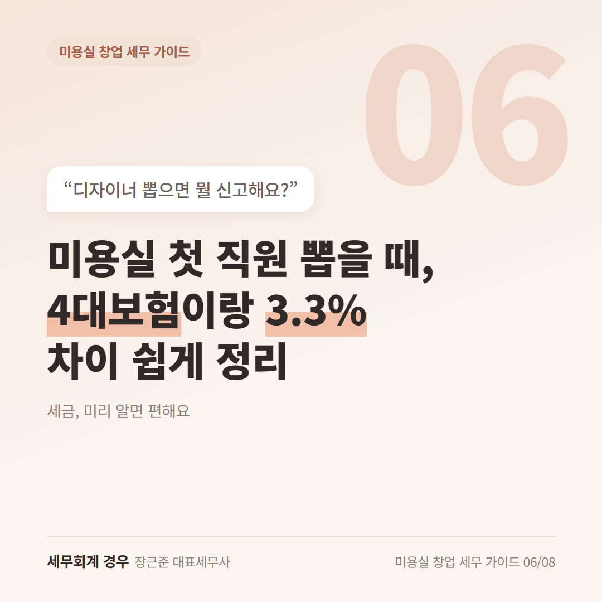
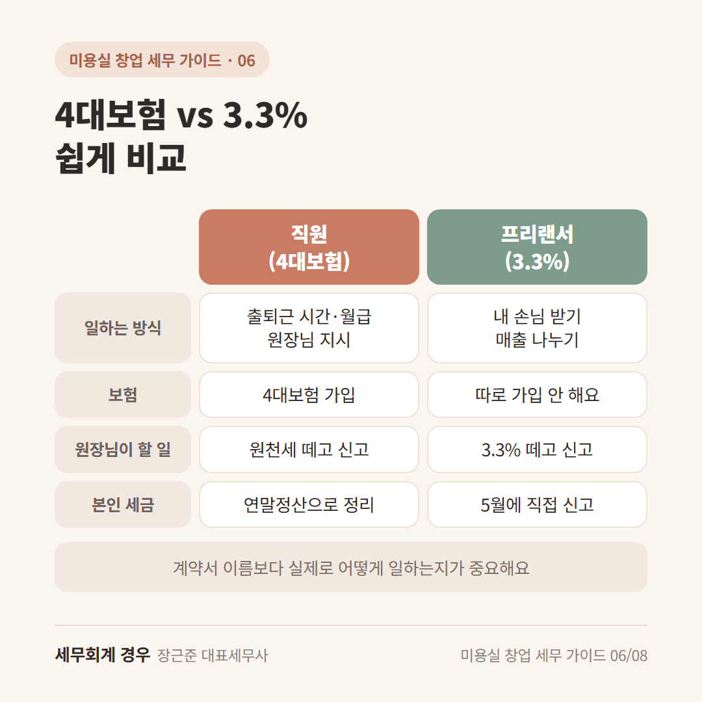
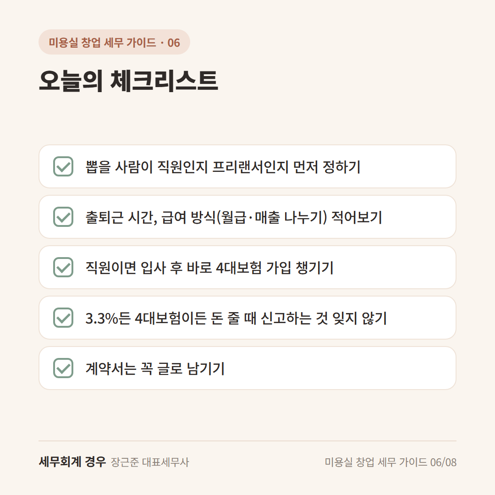

미용실 창업 세무 가이드 · 6번째 글
미용실 첫 직원 뽑을 때, 4대보험이랑 3.3% 차이 쉽게 정리

구인 글을 올리고, 마음에 드는 디자이너와 면접을 봤어요.
그런데 디자이너가 "저는 3.3%로 해주세요" 하네요.
"3.3%가 뭐지? 4대보험이랑 뭐가 다른 거지?"
미용실 직원 4대보험과 3.3%, 이름은 어려워 보여도 차이는 간단해요.
1. 4대보험: 우리 샵 "직원"으로 일할 때
정해진 시간에 출근하고, 월급을 받고, 원장님 지시에 따라 일하면 보통 직원이에요.
이럴 땐 4대보험(국민연금, 건강보험, 고용보험, 산재보험)에 가입해요.
보험료는 직원 월급에서 일부를 떼고, 원장님도 일부를 함께 내요.
그리고 월급 줄 때 떼어둔 세금은 원천세로 신고해요.
인턴, 스태프처럼 원장님 옆에서 보조하는 분들도 대부분 여기에 해당해요.
2. 3.3%: 프리랜서로 함께 일할 때
3.3%는 디자이너가 프리랜서(내 손님을 내가 받고, 매출을 나누는 방식)로 일할 때 쓰는 방식이에요.
줄 돈에서 3.3%를 떼고 드린 뒤, 떼어둔 돈은 원장님이 대신 신고하고 내요.
4대보험 가입을 따로 하지 않아서 원장님 보험료 부담이 줄어요.
대신 디자이너 본인이 5월에 종합소득세를 신고해요.
3. 이름보다 "실제로 어떻게 일하는지"가 중요해요
3.3%로 계약했더라도
원장님이 출퇴근 시간을 정하고, 시술 방식을 지시하고, 고정 월급을 준다면
직원으로 볼 수도 있어요.
그러면 4대보험이나 퇴직금 이야기가 나중에 나올 수 있어요.
그래서 계약 전에 "우리 샵은 어떤 방식이 맞을까?"를 한 번 확인해두면 편해요.

오늘의 체크리스트

- 뽑을 사람이 직원인지 프리랜서인지 먼저 정하기
- 출퇴근 시간, 급여 방식(월급·매출 나누기) 적어보기
- 직원이면 입사 후 바로 4대보험 가입 챙기기
- 3.3%든 4대보험이든 돈 줄 때 신고하는 것 잊지 않기
- 계약서는 꼭 글로 남기기
자주 묻는 질문
3.3%로 하면 원장님한테 무조건 좋은 거죠?
보험료 부담은 줄지만, 실제로 직원처럼 일한다면 나중에 문제가 될 수 있어요. 일하는 방식에 따라 달라서 상담으로 확인하시는 게 좋아요.
신고 없이 현금으로 주면 안 되나요?
신고하지 않으면 원장님이 쓴 인건비로 인정받기 어려워요. 신고해두는 게 원장님 세금에도 도움이 돼요.
마무리
미용실 직원 4대보험과 3.3%는 "어떻게 일하느냐"로 나뉜다고 기억하시면 돼요.
첫 직원을 뽑기 전, 계약 방식이 고민되면 한 번 편하게 물어보세요.
개인 상황에 따라 달라질 수 있으니 자세한 내용은 상담으로 확인하세요.